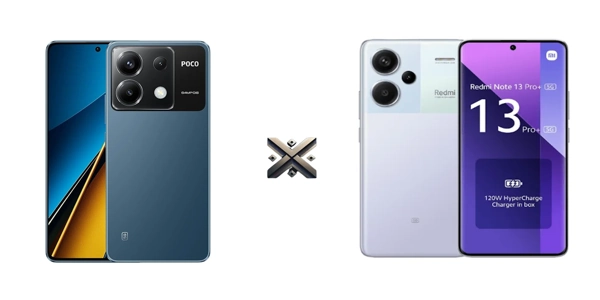

Na disputa entre dois dos modelos mais comentados da Xiaomi, a dúvida persiste: Poco X6 ou Redmi Note 13 Pro plus? Ambos prometem alto desempenho, design atrativo e boas câmeras, mas qual deles realmente entrega o melhor custo-benefício?.
Neste comparativo completo, vamos detalhar todos os aspectos técnicos, desde processador, armazenamento, câmeras, bateria, até o preço. Se você está em dúvida sobre qual Xiaomi comprar em 2025, este artigo vai te ajudar a decidir com base em dados concretos.

O Poco X6 mantém a tradição da linha Poco, com design moderno, acabamento em plástico de boa qualidade e molduras finas. Já o Redmi Note 13 Pro Plus aposta em um visual mais premium, com traseira em vidro e laterais curvas, trazendo uma sensação mais sofisticada na pegada. Além disso, o Redmi Note 13 Pro Plus possui acabamento que repele marcas de dedo e sujeiras, algo importante para quem gosta de manter o celular sempre limpo. O Poco X6, por outro lado, é mais leve e pode ser mais confortável para quem prefere aparelhos menos pesados no dia a dia. Ambos contam com sensor de digital sob a tela, o que reforça o apelo moderno do design.
Ambos trazem telas de alta qualidade, ideais para quem consome conteúdo multimídia:
Essas telas são ótimas para quem gosta de assistir a vídeos em alta resolução, jogar com boa fluidez e navegar com nitidez. A tecnologia AMOLED garante pretos profundos e cores vibrantes. No caso do Note 13 Pro Plus, a curvatura adiciona um toque extra de imersão e estética, embora possa ser menos prática para quem costuma usar películas protetoras. Ambos têm suporte a HDR10+ e oferecem excelente visibilidade mesmo sob luz solar intensa, o que é ideal para uso externo.
Quando o assunto é câmera, os dois modelos apostam em sensores potentes, com ênfase na qualidade da lente principal. O Poco X6 conta com uma câmera principal de 64 MP, acompanhada por um sensor ultra-wide de 8 MP e um macro de 2 MP. Já o Redmi Note 13 Pro Plus se destaca com uma lente principal de 200 MP, oferecendo mais detalhes e possibilidades em edições de imagem, além do mesmo conjunto de sensores secundários (8 MP e 2 MP).
Nas selfies, ambos entregam 16 MP de resolução, com boa definição mesmo em ambientes com pouca luz. Em vídeos, os dois modelos gravam em 4K, mas o Note 13 Pro Plus leva vantagem pela estabilização óptica, ideal para vídeos mais suaves. Para quem prioriza fotografia e vídeos de qualidade, o modelo da linha Redmi oferece uma experiência mais robusta e refinada.
O Poco X6 vem equipado com o processador Snapdragon 7s Gen 2, enquanto o Redmi Note 13 Pro Plus conta com o MediaTek Dimensity 7200 Ultra. Ambos são chips de última geração e entregam performance mais que suficiente para tarefas do dia a dia, multitarefa intensa e jogos pesados.
Na prática, o Dimensity 7200 Ultra tem vantagem em eficiência energética e desempenho gráfico, enquanto o Snapdragon apresenta compatibilidade melhor com apps otimizados para a plataforma Qualcomm. A fluidez nos dois modelos é excelente, sem engasgos, mesmo com múltiplos apps abertos. A memória RAM vai de 8 GB até 12 GB, e o armazenamento pode chegar a 512 GB nos dois aparelhos, com velocidades rápidas para leitura e gravação de dados.
Ambos rodam o Android 13 com a interface MIUI 14, mas já devem receber atualização para o HyperOS. Os dois modelos contam com conectividade 5G, Wi-Fi 6, Bluetooth 5.3 e NFC. Também possuem som estéreo de alta qualidade e entrada USB-C. Vale destacar que o Note 13 Pro Plus remove a entrada P2 para fone de ouvido, enquanto o Poco X6 mantém essa opção para quem prefere usar fones com fio.
A bateria do Poco X6 tem 5100 mAh, enquanto o Note 13 Pro Plus vem com 5.000 mAh. Ambos entregam cerca de 1 dia e meio de uso moderado a intenso, com folga. O grande diferencial está no carregamento rápido: o Redmi Note 13 Pro Plus suporta carregamento de 120W, recarregando completamente em cerca de 20 minutos. O Poco X6, por sua vez, oferece 67W, que também é bastante rápido, mas leva em torno de 40 minutos para carga total.
Se você busca praticidade na hora de recarregar, o Note 13 Pro Plus sai na frente. Porém, em tempo de tela e uso, os dois estão bem equilibrados.
O Poco X6 foi lançado em janeiro de 2024, com preços iniciais acessíveis, considerando seu conjunto completo — atualmente, pode ser encontrado por cerca de R$ 1.890, dependendo da versão e da loja. Já o Redmi Note 13 Pro Plus também chegou no início de 2024, mas com um posicionamento de mercado um pouco mais alto, custando aproximadamente R$ 3.000 em sites de importação. A previsão é de que ele chegue ao Brasil ainda no primeiro semestre de 2025, tornando-se uma das apostas premium da Xiaomi no país.
Ambos podem ser encontrados por preços competitivos, especialmente em importadoras e marketplaces. Para quem quer o melhor custo-benefício, o Poco X6 pode ser mais interessante, mas quem busca um conjunto mais completo pode considerar o Note 13 Pro Plus como um investimento a longo prazo.
Se o que você procura é equilíbrio entre preço e desempenho, o Poco X6 oferece um pacote muito sólido. Ele é potente, tem boa tela, câmeras satisfatórias e preço mais acessível. Já o Redmi Note 13 Pro plus é para quem quer o máximo: melhor câmera, design premium, carregamento ultra-rápido e construção mais resistente. Ambos são boas escolhas dentro do universo Xiaomi, e a decisão depende do seu perfil de uso e orçamento.
Se você achou útil nossas dicas sobre Poco X6 ou Redmi Note 13 Pro plus ou ainda tem dúvidas, ficaremos felizes em ouvir sua opinião. Há algo que não entendeu ou gostaria de sugerir melhorias? Convidamos você a participar da nossa sessão de comentários no blog do Comparativos X.
 Galaxy A55 vs. A35: Qual o melhor smartphone da Samsung?
Galaxy A55 vs. A35: Qual o melhor smartphone da Samsung? 7 Melhores Tablets de 2024: Custo Benefício para Todos os Orçamentos
7 Melhores Tablets de 2024: Custo Benefício para Todos os Orçamentos Melhores Celulares Gamer de 2024: Desempenho para Jogadores Exigentes
Melhores Celulares Gamer de 2024: Desempenho para Jogadores Exigentes